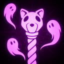
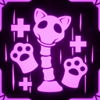
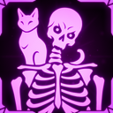
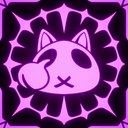
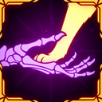

Nekomancer
就算你的骨骸已经重生为魔法巫妖死灵术士，也不代表你不能继续保留爱好和个性。
收集会周期性出现在场地上的 SOUL。被击杀的敌人有概率留下 SOUL。
技能
被动
收集每 X 秒在场地周围生成的 SOUL。被击杀的敌人有 X% 概率留下 SOUL。
主技能：Staff of Feline Mortality
发射一枚投射物，造成 X 点暗影伤害。命中的敌人会被标记为 Undead Kitties 的目标。
10% 概率施加 BREACHED 状态效果。
副技能：Call of the Undead
花费 1 个 SOUL，召唤多种 Undead Kitties 之一。
使用技能会开始召唤流程。在召唤流程期间再次按下技能，可以在召唤物之间切换选择。
| 所有 Nekomancer 召唤物图片 | 类型 | 说明 |
|---|---|---|
| Zombie Kitty | 地面单位，造成暗影伤害。 | |
 |
Balloon Kitty | 空中单位，造成火焰伤害。 |
| Ballista Kitty | 空中单位，造成物理伤害。 | |
 |
Totem Kitty | 治疗你和小范围内的盟友。一段时间后会消失。 |
最大召唤数量随玩家数量缩放：
| Nekomancer 玩家数量 | 每人最大召唤数 |
|---|---|
| 1-2 名 Nekomancer | 最多 3 个召唤物 |
| 3-6 名 Nekomancer | 最多 2 个召唤物 |
| 7 名以上 Nekomancer | 最多 1 个召唤物 |
你最多可以持有 5 个 SOUL，未收集的 SOUL 会在 30 秒后消失。
辅助技能：Spirit Drift
进入无敌并向前漂移，持续 2 秒。
冷却 10 秒。
职业升级
| 图片 | 稀有度 | 技能 | 说明 | 叠加类型 |
|---|---|---|---|---|
 |
普通 | Nekomancer: Proficiency | 被击杀敌人留下 Soul 的概率 +5%；随机 Soul 生成速率 +25%。 | 线性 |
 |
稀有 | Nekomancer: Death Blossom | Kitty Totem 治疗速度 +10%；Kitty Totem 治疗范围 +1m；伤害 -3%。 | 线性 |
 |
稀有 | Nekomancer: Mastery | 你每持有 1 个 Soul，总伤害 +2%，生命回复 +20%。 | 线性 |
 |
稀有 | Nekomancer: Soul Detonation | 小猫死亡时，会释放一次大型爆炸，造成暗影伤害，并有 50% 概率施加 BREACHED 状态效果。 | 线性 |
 |
传奇 | Nekomancer: Necropact | 当至少有 1 只召唤小猫存在时：你在低 HP 时受到的任何伤害，其 600% 会被转移给 1 只小猫。 | 线性 |